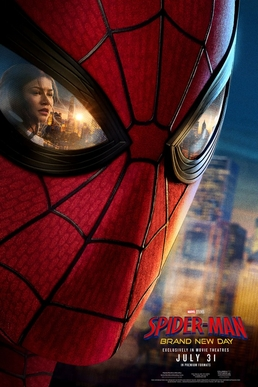

| 导演 | 德斯汀·丹尼尔·克雷顿（Destin Daniel Cretton） |
| 编剧 | 克里斯·麦肯纳 埃里克·萨默斯 |
| 原著 | 漫威漫画《蜘蛛侠》（斯坦·李 / 史蒂夫·迪特科） |
| 制片 | 凯文·费奇 艾米·帕斯卡尔 阿维·阿拉德 |
| 摄影指导 | 布雷特·帕夫拉克 |
| 剪辑 | 纳特·桑德斯 吉娜·桑索姆 哈里·尹 |
| 配乐 | 迈克尔·贾基诺 |
| 片长 | 145 分钟 |
| 预算 / 评级 | 2.25 亿美元 / PG-13 |
| 发行 | 索尼影业 |
| 制式 | IMAX 扩展画幅（部分场景） |
| 全球票房 | $16.72 亿（2026 年度冠军） |
| 北美开画 | $3.6 亿（影史第一，超《终局之战》） |
| 全球开画 | $9.32 亿（影史第二） |
| 破 10 亿 | 6 天（影史第二快） |
| 汤姆·赫兰德 | Peter Parker / 蜘蛛侠 独守纽约四年 |
| 赞达亚 | MJ Jones-Watson 已有新男友 |
| 萨迪·辛克 | Jean（琴） 寻找被关押的姐妹 |
| 乔恩·伯恩瑟 | Frank Castle /惩罚者 道德对照 |
| 弗洛伦斯·皮尤 | 叶莲娜·贝洛娃 信息提供者 |
| 雅各布·巴塔伦 | Ned Leeds MIT 毕业回纽约 |
| 玛丽莎·托梅 | May Parker 梅婶（回忆/闪回） |
| 马克·鲁法洛 | Bruce Banner / 浩克 被心灵控制 |
| 特拉梅尔·蒂尔曼 | Bill Metzger DODC 主管（反派） |
$16.72 亿全球票房。北美开画 $3.6 亿——影史第一，超越《复仇者联盟：终局之战》。从任何商业指标来看，《蜘蛛侠：崭新之日》都是 2026 年最大的现象。
但这部最赚钱的蜘蛛侠电影，恰恰是关于「一无所有」的。奇异博士的咒语让世界遗忘了 Peter Parker 的存在。四年过去，他独自守护纽约街头，不与 MJ 和 Ned 重建联系。他在梅婶墓前停留。他放弃了自己作为 Peter Parker 的生活，完全变成了蜘蛛侠。
这是一部关于自我牺牲的代价的电影——而不仅仅是又一部超英动作片。导演克雷顿从独立制片（《少年收容所》）起家，以处理青少年情感创伤见长。他把这种作者性带入了 MCU：影片中最有力的场景不是动作戏，而是 Peter 在街上偶遇 MJ 看到她亲吻新男友的那一刻，以及他在梅婶墓前的沉默。
但 RT 90% 和 Metacritic 66 之间的落差值得注意。烂番茄告诉你「90% 的评论者认为这部电影值得推荐」——但 Metacritic 告诉你另一个故事：大多数评论者认为它「还不错」，但没有人认为它真正杰出。这种「普遍还行但缺乏共识性卓越」的状态，是否定义了当前超级英雄电影的批评天花板？
本刊的判断是：这是荷兰弟三部曲中最成熟、最具情感深度的一部，但「成熟」本身不等于「好」。当一部蜘蛛侠电影最精彩的部分是角色静静坐在墓碑旁时，你既应该为它的勇气鼓掌，也应该追问：我们到底在期待什么样的超级英雄电影？
蜘蛛侠的核心定位从来不是「拯救世界」——那是复仇者联盟的工作。蜘蛛侠的核心定位是「你的好邻居」。他巡逻的不是银河系，是皇后区的街道。他的敌人不是宇宙霸主，是街头罪犯。这种尺度感——英雄与社区之间的亲密距离——是蜘蛛侠区别于所有其他超英角色的根本特征。
克雷顿的影片忠实于这个核心。开场的时间跳跃之后（片内已过四年），我们看到的是一个完全沉浸在街头执法中的 Peter Parker。他打击蝎子人（Mac Gargan）和手合会忍者，赢得了街头线人的信任。他没有复仇者联盟的资源，没有 Stark 工业的科技，甚至没有一个知道他真名的朋友。他只是——一个在纽约街头巡逻的好邻居。
但这部影片的独特之处在于：它将「好邻居」的身份推到了极端。Peter 不仅失去了与 MJ 和 Ned 的联系——他选择了不重新建立联系。他在公寓里写了一封给 MJ 的「自我介绍信」，却始终没有寄出。这封信的存在，证明他仍然渴望被认出、被记得——但他的「自我牺牲」伦理不允许他这么做。他把自己变成了一种纯粹的功能：守护者。功能没有私生活，功能不需要被爱。
《好莱坞报道》的大卫·鲁尼敏锐地指出：「人性一直是蜘蛛侠最大的力量」。这句话在本片中获得了一种苦涩的含义。Peter 的人性——他对 MJ 的感情、对梅婶的思念、对孤独的疲惫——恰恰是影片的情感引擎。但这些情感不是用来「升级」英雄的，而是用来展示他正在为英雄身份付出什么代价。
TheWrap 的比比亚尼称本片为「一部关于 Peter Parker 的杰出电影」——这个评价的关键词不是「蜘蛛侠」，而是「Peter Parker」。影片最好的时刻都在面具之下：不是在高楼之间荡蛛丝的奇观，而是在出租屋里看着 MJ 社交媒体动态的沉默。
但《综艺》的格莱伯曼提出了合理的质疑：影片「长了半小时」，「笨拙地片段式」。当 Peter 的孤独被反复用动作场景来打断时，情感节奏的断裂就不可避免——每一次他刚要沉入内心，影片就需要把他拉出来打一架。这是超英电影的结构性限制：商业公式要求动作奇观的密度，而角色深度要求留白。克雷顿试图同时满足两者，结果可能是两头不讨好。
烂番茄 90%，Metacritic 66。这是本期最值得讨论的数字。
两个评分体系衡量的是不同的东西。烂番茄衡量的是推荐比例：90% 意味着 402 位评论者中有 362 位给出了「正面」评价——但「正面」的门槛很低，只要超过 6/10 或 3/5 就算「新鲜」。Metacritic 衡量的是加权平均分：66 分（满分 100）意味着评论者的共识更接近「不错」而非「优秀」。
换句话说：绝大多数评论者认为《蜘蛛侠：崭新之日》值得一看——但没有多少人认为它真正杰出。这就是裂缝的含义。
IndieWire 的大卫·埃尔利希给出了 C−——这是本片最严厉的评价之一。他称其为「沉闷而低沉的动作续集」，「制造的问题比解决的多」。这不仅仅是对一部电影的评价，更是对一种模式的质疑：当 MCU 的跨文本叙事要求每一部电影都为未来的续集、联动和宇宙铺设做铺垫时，单片本身的故事完整性就被牺牲了。
《滚石》的大卫·费尔进一步推进了这个批评：Peter「有沦为自己电影里的配角的风险」。当惩罚者、浩克、叶莲娜等客串角色占据了大量银幕时间时，蜘蛛侠自己的故事——一个孤独的年轻人学会不再独自承担一切——反而被挤压到了边缘。
但这里有一个微妙的区分需要把握。费尔和埃尔利希的批评指向的不是影片的质量，而是影片的优先级。克雷顿在角色情感层面的处理确实比大多数 MCU 电影更细腻——荷兰弟的表演、赞达亚的化学反应、伯恩瑟的道德对照都是扎实的。问题在于：这些角色层面的努力被置于了一个仍然以动作奇观和宇宙联动为骨架的商业框架中。框架不允许情感呼吸，只允许情感在两场动作戏之间匆匆闪过。
这就是 RT 90% / MC 66 裂缝的根源：评论者在「这部电影做得不错」的层面达成了共识（RT 高分），但在「这部电影是否达到了它本可以达到的高度」的层面产生了分歧（MC 低分）。前者评判的是执行，后者评判的是野心。克雷顿的执行力得到了认可，但商业框架限制了他的野心——或者说，限制了他将野心完全展开的空间。
本片最容易被当作「彩蛋」略过的细节，可能也是最有意味的：Peter 的能力开始进化。他的眼睛偶尔变成全黑；感官大幅增强；最重要的是——他的手腕开始分泌有机蛛丝，不再需要机械蛛丝发射器。
对熟悉蜘蛛侠电影历史的观众来说，这个变化的指向是明确的：托比·马奎尔版的蜘蛛侠（萨姆·雷米三部曲，2002–2007）就是有机蛛丝。安德鲁·加菲尔德版（2012–2014）和汤姆·赫兰德版（2017 至今）都使用了机械发射器——后者还得到了托尼·斯塔克的科技加持。有机蛛丝 = 肉身性；机械蛛丝 = 科技性。这不是一个无足轻重的区别。
荷兰弟版的 Peter Parker 一直被定义为科技少年——他的战衣来自 Stark 工业，他的蛛丝是工程产品，他的战术依赖于 AI 和无人机。这种科技属性与 MCU 的世界观高度一致：在 MCU 中，超能力几乎总是与科技和资本挂钩。
但当 Peter 在本片中失去了一切外部支持——没有 Stark 科技，没有复仇者联盟，没有任何人知道他是谁——他的能力反而回归了肉身。有机蛛丝的出现不是「升级」，而是退化到更原始、更本能的状态。他不再是穿着 Stark 战衣的科技少年；他是一个身体本身就在分泌蛛丝的变异人。
这个转变与影片整体的身份叙事完美吻合：Peter 从一个依赖外部科技和社交网络的少年英雄，变成了一个完全依靠自己身体和本能的孤独守护者。当科技被剥离，剩下的是肉身——是脆弱的、会受伤的、但也是不可剥夺的存在。
黑色眼瞳的间歇出现进一步强化了这种「去人性化」的暗示：Peter 的蜘蛛一面正在占据更多的空间。他不仅失去了社会身份（没有人记得他），也在逐渐失去人类的外形特征。影片中他在愤怒中暴打蝎子人、误伤警察的场景，是这种失控的具象化——当一个英雄的权力完全来自肉身而非工具时，他离暴力只有一步之遥。
从独立制片到漫威：克雷顿的路径
德斯汀·丹尼尔·克雷顿的导演生涯始于《少年收容所》（Short Term 12, 2013）——一部关于青少年寄养机构的低成本独立片，以惊人的情感细腻度处理了创伤、信任和照护的主题。之后他拍了《正义的慈悲》（Just Mercy, 2019）和《尚气与十环传奇》（2021）。从独立到漫威再到蜘蛛侠，这条路径的核心一贯性在于：他始终在处理「被体制忽视的人」的故事。
在《蜘蛛侠：崭新之日》中，这种作者性体现为：Peter Parker 是一个被体制「遗忘」的人——不是被错误对待，而是被魔法从所有人的记忆中抹去。克雷顿用他一贯的耐心来处理这种「不存在」的孤独——长时间的沉默、角色的面部特写、日常生活的碎片化呈现。
摄影与动作调度
摄影指导布雷特·帕夫拉克（Brett Pawlak）此前主要拍摄独立电影（包括克雷顿的《少年收容所》和《正义的慈悲》）。他的风格以手持摄影的自然主义为特征——在动作场景中，这意味着比典型 MCU 电影更多的晃动感和临场感。纽约街头的追逐段落中，镜头紧跟 Peter 的身体运动，创造了一种身体性的参与感——观众不是在观看动作，而是在经历动作。这种处理与影片「肉身回归」的主题形成了呼应。
剪辑：三双手的协作
本片的剪辑由 Nat Sanders、Gina Sansom 与 Harry Yoon 三人共同承担——这个组合本身就是一条线索。Sanders 是巴里·詹金斯的长期合作者（《月光男孩》《蓝调天后》），擅长在缓慢的节奏中积蓄情感；Yoon 同样出身詹金斯阵营，并剪过《尚气与十环传奇》，熟悉克雷顿的工作方式。这种配置意味着剪辑台的优先级与多数超英片不同：动作段落的剪切服务于情绪连续性，而非奇观密度。结果是一部 145 分钟的影片里，最有效的「剪辑时刻」不是打斗的蒙太奇，而是 Peter 独自巡逻时的静场拼接——夜的重复、季节的推移、一个人对一座城市的无声看护，全靠剪接点的疏密完成。三名剪辑师的分工难以从成片精确切分，但詹金斯系剪辑的共同签名清晰可辨：让镜头停留得比商业片的习惯更长一拍。
配乐：贾基诺的主题变奏
迈克尔·贾基诺回归为第三部荷兰弟蜘蛛侠配乐。他的蜘蛛侠主题在前两部中已经确立了辨识度——在《英雄无归》中加入了更悲怆的变奏。本片中，主题旋律进一步简化——减少了铜管的辉煌感，增加了弦乐的内省性。这种变化与 Peter 的处境一致：他不再是一个在高楼上俯瞰城市的英雄，而是一个在街巷中沉默巡逻的守护者。音乐跟着他一起降低了高度。
声音设计：寂静作为效果
与配乐的收缩相配合，本片的声音设计有意把「安静」做成了效果。被世界遗忘的设定在声音层面的对应物是：Peter 的日常几乎没有旁白式的环境热闹——没有人声嘈杂的社交场景，没有复仇者通讯频道的插科打诨，剩下的只有纽约本身的声音底噪：风、远处的车流、蛛丝摆荡时绳体与空气的摩擦。动作场景中，增强后的感官能力用声音的主观化处理来呈现——危险临近时音场骤然收窄再炸开，这套语法借自漫画的「蜘蛛感应」分格，却完全用声画完成。对比前两部荷兰弟蜘蛛侠贯穿始终的俏皮话音轨，本片大段沉默的勇气，是技术层面对「孤独」最直接的翻译。
IMAX 扩展画幅
影片在部分场景中使用了 IMAX 扩展画幅——但与诺兰《奥德赛》的全画幅叙事策略不同，本片的 IMAX 画幅主要用于动作奇观段落的纵向展开，而非叙事性的空间表达。这反映了 MCU 对 IMAX 格式的一贯定位：奇观增强器，而非叙事工具。
| 北美开画 | $3.6 亿（影史第一，超《终局之战》$3.57 亿） |
| 全球开画 | $9.32 亿（影史第二） |
| 破 $10 亿 | 6 天（影史第二快，仅次于《终局之战》5 天） |
| 全球总票房 | $16.72 亿（2026 年度冠军） |
| 北美总票房 | $6.54 亿 |
| 海外总票房 | $10.18 亿（含中国 $1.867 亿） |
影评来源：Deadline / Variety / TheWrap / Empire / THR / IndieWire / Rolling Stone / 卫报
数据来源：Wikipedia / Rotten Tomatoes / Metacritic / Box Office Mojo，截至 2026.08.09
导演采访：赫兰德接受采访（2026.07）；克雷顿 IndieWire 访谈